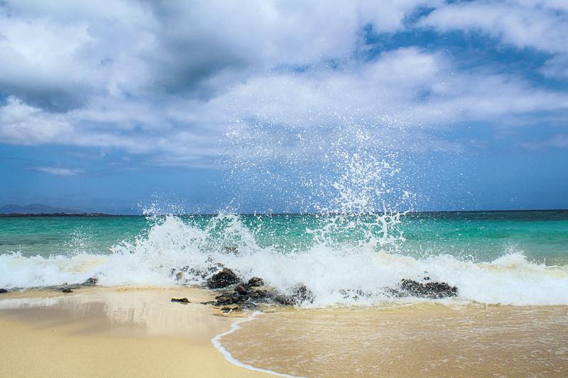

Daftar Wisata Pantai Gunung Kidul yang Memukau
Gunung Kidul merupakan salah satu kabupaten yang berada di Yogyakarta. Berlokasi di pesisir pantai selatan Yogyakarta, wisata pantai Gunung Kidul jadi destinasi yang wajib dikunjungi saat berkunjung ke sana. Garis pantai Gunung Kidul sangat panjang sehingga ada banyak ragam pantai, dari pantai yang sudah sangat populer di kalangan traveler sampai yang masih asing.
Di sisi lain, karena lokasinya berada di area Pantai Selatan, banyak mitos yang tersebar soal keangkeran kawasan ini. Kamu pasti sudah pernah dengar tentang sosok Nyi Roro Kidul, kan? Nah, pantai di Gunung Kidul termasuk wilayah kekuasaan Nyi Roro Kidul. Konon Ratu Pantai Selatan ini menguasai seluruh pantai di selatan Pulau Jawa. Terkait hal tersebut, ada beberapa 'peraturan' yang harus diikuti guna menghormati Sang Ratu, salah satu yang paling terkenal yakni; dilarang memakai baju hijau atau kamu akan hilang tersapu ombak besar.
Tapi itu kan hanya mitos yang tersebar dari mulut ke mulut. Sebenarnya ada teori ilmiah yang bisa menjelaskan perihal gelombang dan arus laut di Pantai Selatan yang selalu besar. Alasan Pantai Gunung Kidul dan Pantai Selatan Jawa Lainnya Berombak Besar.
Biasanya besarnya ombak dipengaruhi kecepatan angin, durasi angin, dan area pembangkitan ombak. Semakin jauh jarak area pembangkit gelombang maka ombak yang dihasilkan akan semakin besar. Penyebab gelombang Pantai Selatan lebih ganas daripada Pantai Utara ternyata karena perbedaan area pembangkit gelombang. Dari Pantai Selatan ke area pembangit gelombangnya, Australia, jaraknya mencapai 1.500 km sampai 6.000 km. Sedangkan Pantai Utara hanya berjarak 300-500 km ke Pulau Kalimantan, area pembangkit gelombangnya. Jadi begitu alasan mengapa ombak di Pantai Selatan sangat besar dibandingkan pesisir lainnya.
Karena terkenal dengan ombak besarnya, wisata pantai di Gunung Kidul banyak dipilih para pecinta surfing. Bisa dibilang pantai Gunung Kidul sangat ideal buat para pemburu ombak. Nah, sebaliknya; kalau mau diving, snorkeling, atau menikmati watersport yang aman bisa dibilang Pantai Gunung Kidul bukan pilihan yang ideal. Tapi buat kamu yang cuma pengen cari suasana pantai yang bikin rileks, pantai di Gunung Kidul juga recommended banget buat dikunjungi, kok.
1. Pantai SiungPantai Siung dikelilingi tebing tinggi yang indah. Tebing-tebing ini bisa kamu panjat, lho! Ada 250 jalur panjat tebing yang sudah berstandar internasional. Di sana ada sebuah tebing yang cukup unik. Tebing itu menjulang dari arah timur ke barat, mirip bentuk gigi kera. Dalam bahasa Jawa, gigi kera disebut Siung Wanara. Nah, itu lah yang membuat pantai ini disebut Pantai Siung!
Tidak hanya indah untuk dipandang dan menantang buat dipanjat, ternyata ada banyak kera yang tinggal di tebing-tebing itu, lho. Kera-kera itu nggak akan mengganggu kok, namun kamu tetap harus berhati-hati, ya!
Pantai Muncar Gunung Kidul merupakan salah satu pantai yang masih cukup asing di kalangan traveler. Seperti pantai-pantai di Jogja pada umumnya, Pantai Muncar juga menawarkan pasir putih yang lembut. Selain itu, pantai ini dikelilingi tebing tinggi yang membuat pantai ini seolah-olah adalah tempat rahasia. Karena dekat dengan pemukiman penduduk, kamu bisa sekalian belajar soal kearifan lokal nelayan setempat. Menarik bukan?
3. Pantai KrakalPantai Krakal memiliki cerita menarik soal asal usulnya. Dulunya kawasan Pantai Krakal sebenarnya berada di bawah laut. Pantai ini bisa muncul ke permukaan karena peristiwa epirogenesa negatif, yaitu pergerakan kerak bumi yang mengakibatkan naiknya permukaan lapisan bumi. Alhasil peristiwa alam itu memunculkan pantai yang sangat menawan. Kamu akan menemui batu karang berukuran sangat besar. Batu karang ini berwarna hitam sehingga sangat kontras dengan warna pasir yang putih.
4. Pantai NgobaranPantai Ngobaran juga termasuk salah satu pantai yang belum cukup terkenal, tapi soal keindahannya tentu aja nggak kalah dengan wisata pantai di Gunung Kidul lainnya. Pantai Ngobaran punya perbedaan yang mencolok dengan pantai-pantai di Gunung Kidul lainnya karena di sana ada Pura. Pura ini punya sejarah panjang yang berkaitan dengan Raja Brawijaya V. Oleh karena itu kalau kamu mau merasakan suasana pantai sekaligus menikmati warisan sejarah, Pantai Ngobaran Gunung Kidul harus banget kamu datangi!
5. Pantai SeruniPantai unik lainnya di Gunung Kidul dan masih jarang dikunjungi wisatawan adalah Pantai Seruni . Pantai ini sangat unik karena ada goa yang berhadapan langsung dengan pemandangan pantai. Dari tebing goa juga ada air terjun kecil yang mengalir ke bawah. Keunikan serta keindahannya membuat pantai ini sering dijadikan tempat buat foto prewedding, lho. Bahkan ada juga yang camping di goa ini.